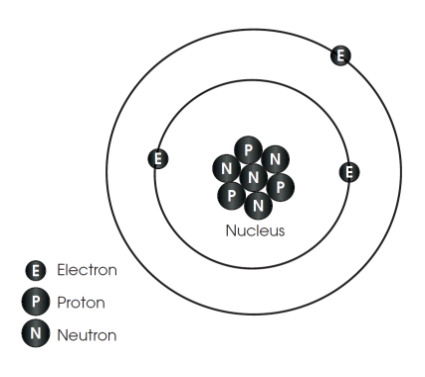

Properties of Matter(Propiedades de la Materia)
Matter is made of atoms that cannot be broken apart.
Atoms are mostly empty space, but inside atoms there are three kinds of particles:
protons and neutrons are in the nucleus of the atom
electrons are outside the nucleus.
The mass of an atom is almost all in the protons and neutrons of the nucleus.
Electrons have a very small mass
The unit of mass is the kilogram
Protons have a positive electric charge and electrons have a negative electric charge.
Neutrons have a neutral electric charge and electrons have a negative electric charge.
Electrons have a negative electric charge and electrons have a negative electric charge.
Two or more atoms attached together are a molecule
The connections between atoms in a molecule are calledchemical bonds